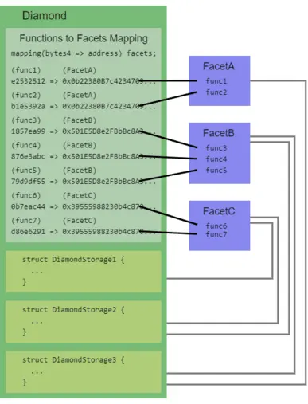

深入可升级合约
author：Thomas_Xu
引言
Solidity合约部署在链上之后，代码是不可变的（immutable）。这样既有优点，也有缺点：
- 优点：安全，用户知道会发生什么（大部分时候）。
- 坏处：就算合约中存在bug，也不能修改或升级，只能部署新合约。但是新合约的地址与旧的不一样，且合约的数据也需要花费大量gas进行迁移。
有没有办法在合约部署后进行修改或升级呢？答案是有的，那就是代理模式。

代理模式将合约数据和逻辑分开，分别保存在不同合约中。我们拿上图中简单的代理合约为例，数据（状态变量）存储在代理合约中，而逻辑（函数）保存在另一个逻辑合约中。代理合约（Proxy）通过delegatecall，将函数调用全权委托给逻辑合约（Implementation）执行，再把最终的结果返回给调用者（Caller）。
代理模式主要有两个好处：
- 可升级：当我们需要升级合约的逻辑时，只需要将代理合约指向新的逻辑合约。
- 省gas：如果多个合约复用一套逻辑，我们只需部署一个逻辑合约，然后再部署多个只保存数据的代理合约，指向逻辑合约。
在代理模式中，代理合约就等同于数据库，作为一个存储数据的地方，更新系统时只需要更改逻辑合约即可。省去了升级中的数据迁移带来的巨大gas消耗。
题外话：最近看到MixBytes团队一篇关于可升级合约存储解决方案的Blog，它是将传统数据库和区块链相结合的一种方式，采用了“协定数据库”的方案。
利用智能合约开发了一个基于NoSQL的以太坊列式数据存储原型。我觉得非常有意思。
原文连接：可升级以太坊智能合约的存储 (mixbytes.io)
简单的可升级合约
在理解了代理合约后，就很容易理解可升级合约。它就是一个可以更改逻辑合约的代理合约。

简单实现
下面我们实现一个简单的可升级合约，它包含3个合约：代理合约，旧的逻辑合约，和新的逻辑合约。
代理合约
roxy合约不长，但是用到了内联汇编，因此比较难理解。它只有一个状态变量，一个构造函数，和一个回调函数。状态变量implementation，在构造函数中初始化，用于保存Logic合约地址。
1 | // SPDX-License-Identifier: MIT |
Proxy的回调函数将外部对本合约的调用委托给 Logic 合约。这个回调函数很别致，它利用内联汇编（inline assembly），让本来不能有返回值的回调函数有了返回值。其中用到的内联汇编操作码：
calldatacopy(t, f, s)：将calldata（输入数据）从位置f开始复制s字节到mem（内存）的位置t。delegatecall(g, a, in, insize, out, outsize)：调用地址a的合约，输入为mem[in..(in+insize))，输出为mem[out..(out+outsize))， 提供gwei的以太坊gas。这个操作码在错误时返回0，在成功时返回1。returndatacopy(t, f, s)：将returndata（输出数据）从位置f开始复制s字节到mem（内存）的位置t。switch：基础版if/else，不同的情况case返回不同值。可以有一个默认的default情况。return(p, s)：终止函数执行, 返回数据mem[p..(p+s))。revert(p, s)：终止函数执行, 回滚状态，返回数据mem[p..(p+s))。
旧逻辑合约
1 | openzeppelin`的文档中，一般称逻辑合约的英文为`implementation contract`而不是`logic contract` |
这个逻辑合约包含3个状态变量，与保持代理合约一致，防止插槽冲突。它只有一个函数foo()，将代理合约中的words的值改为"old"。
1 | // 逻辑合约1 |
新逻辑合约
这个逻辑合约包含3个状态变量，与保持代理合约一致，防止插槽冲突。它只有一个函数foo()，将代理合约中的words的值改为"new"
1 | // 逻辑合约2 |
管理者
管理者只需要调用SimpleUpgrade中的upgrade(address logic2)函数即可完成合约的升级。
问题
这样的可升级模式看起来会给DEFI项目带来很多便利，同时也带来许多问题：
选择器碰撞
在solidity中，函数选择器是函数签名的哈希的前4个字节，但由于函数选择器仅有4个字节，范围很小，因此两个不同的函数可能会有相同的选择器，例如下面两个函数：
1 | // 选择器冲突的例子 |
示例中，函数burn()和collate_propagate_storage()的选择器都为0x42966c68，是一样的，这种情况被称为“选择器冲突”。在这种情况下，EVM无法通过函数选择器分辨用户调用哪个函数，因此该合约无法通过编译。
由于代理合约和逻辑合约是两个合约，就算他们之间存在“选择器冲突”也可以正常编译，这可能会导致很严重的安全事故。举个例子，如果逻辑合约的a函数和代理合约的升级函数的选择器相同，那么管理人就会在调用a函数的时候，将代理合约升级成一个黑洞合约，后果不堪设想。
目前，有三种实现方式来避免这个问题，分别是：
- UUPS Implementation —— EIP1822
- Transparent Proxy Implementation —— EIP1967
- Diamond Implementation —— EIP2535
其中，UUPS模式使用的最多，钻石协议比较新，被认为是很有潜力的一个EIP协议。
存储冲突
由于委托调用的代理模式，使用代理时很快就会出现一个问题，与代理合约中存储变量的方式有关。假设代理将逻辑协定的地址存储在其唯一的变量中。现在，假设逻辑协定是一个基本标记，其第一个变量是 。这两个变量的大小均为 32 字节，据 EVM 所知，它们占据代理委托调用的结果执行流的第一个槽。当逻辑协定写入 时，它会在代理状态的范围内执行此操作，实际上写入 。此问题可称为“存储冲突”。
1 | |Proxy |Implementation | |
非结构化存储代理
有很多方法可以克服这个问题，OpenZeppelin Upgrades实施的“非结构化存储”方法的工作原理如下。它不是将地址存储在代理的第一个存储槽中，而是选择一个伪随机槽。此插槽足够随机，逻辑合约在同一插槽中声明变量的概率可以忽略不计。在代理存储中随机化插槽位置的相同原理也用于代理可能具有的任何其他变量，例如管理员地址（允许更新的值）等。
1 | |Proxy |Implementation | |
在 EIP 1967 之后如何实现随机存储的示例：
1 | bytes32 private constant implementationPosition = bytes32(uint256( |
因此，逻辑协定不需要关心覆盖代理的任何变量。面临此问题的其他代理实现通常意味着让代理了解逻辑协定的存储结构并适应它，或者让逻辑协定知道代理的存储结构并适应它。这就是为什么这种方法被称为“非结构化存储”的原因;任何一份合同都不需要关心另一份合同的结构。
实现版本之间的存储冲突
如前所述，非结构化方法避免了逻辑协定和代理之间的存储冲突。但是，不同版本的逻辑协定之间可能会发生存储冲突。在这种情况下，假设逻辑协定的第一个实现存储在第一个存储槽中，升级后的逻辑协定存储在同一个第一个槽中。当更新的逻辑协定尝试写入变量时，它将使用存储先前值的相同存储位置，并覆盖它。
不正确的存储保存：
1 | |Implementation_v0 |Implementation_v1 | |
正确的存储保存：
1 | |Implementation_v0 |Implementation_v1 | |
非结构化存储代理机制无法防止这种情况。由用户决定让逻辑协定的新版本扩展以前的版本，或者保证存储层次结构始终追加但不修改。但是，OpenZeppelin Upgrades检测到此类冲突并适当地警告开发人员。
四种可升级模式
在本文中只分析四种升级模式，接下来可能会写一篇文章深入EIP897，EIP1822，EIP1967，EIP2535。
需要注意的是除了EIP2535对应钻石代理以外，897，1822，1967是一个进化过程，现在oz库的UUPS，透明代理和信标代理均是在1967的基础上开发的。
目前大致有四种可升级方案，分别是
- UUPS代理
- 透明代理
- 信标代理
- 钻石代理
OpenZeppelin中包含的原始代理遵循透明代理模式，虽然oz仍然提供这种模式，但oz的建议是现在转向 UUPS 代理，它既轻量级又通用。
推荐阅读OpenZeppelin的官方博客：
钻石代理是唯一没有被OZ收录的代理协议，一方面是因为此代理现在存在一定的争议，一方面是因为支持钻石代理对于oz来说工作量太大。就目前的情况来看，oz并不打算将钻石代理整合进oz库。
透明代理—Transparent
1 | import "@openzeppelin/contracts/proxy/transparent/TransparentUpgradeableProxy.sol"; |
此协定实现可由管理员升级的代理。
这种模式意味着:
如果管理员以外的任何帐户调用代理合约，则调用将转发到逻辑合约，即使该调用与代理本身公开的管理函数之一冲突。
如果管理员调用代理，它只可以访问管理功能，其调用永远不会转发到逻辑合约。如果管理员尝试在逻辑合约上调用函数，它将失败并显示错误 “管理员无法回退到代理目标”。
这些属性意味着管理员帐户只能用于管理员操作，例如升级代理或更改 管理员，因此最好是不用于其他任何用途的专用帐户。这些属性将避免选择器冲突发送的可能。
以下是根据openzeppelin库给出的实现逻辑梳理的call graph：
简单实现
以下代码由TransparentUpgradeableProxy简化而成
代理合约
它包含3个变量：
implementation：逻辑合约地址。admin：admin地址。words：字符串，可以通过逻辑合约的函数改变。
它包含3个函数
- 构造函数：初始化admin和逻辑合约地址。
fallback()：回调函数，将调用委托给逻辑合约，不能由admin调用。upgrade()：升级函数，改变逻辑合约地址，只能由admin调用。
1 | contract TransparentProxy { |
逻辑合约
1 | // 旧逻辑合约 |
管理者合约
1 | import "@openzeppelin/contracts/proxy/transparent/ProxyAdmin.sol"; |
openzeppelin给我们提供了一个辅助合同，旨在被分配为 TransparentUpgradeableProxy的管理员。对于一个 解释为什么要使用它，请参阅 TransparentUpgradeableProxy 的文档。
在本合约是管理者的情况下，调用upgrade(proxy, _implementation)或upgradeAndCall(proxy, implementation, data)即可
通用可升级代理—UUPS
1 | import "@openzeppelin/contracts/proxy/utils/UUPSUpgradeable.sol"; |
UUPS 的名称来自 EIP1822，它首先记录了该模式。
在该模式中，升级函数存在于逻辑合约中而非代理合约。这也使得管理员随时可以把合约变为不可升级的合约。
UUPS和透明代理共享相同的升级接口，但在 UUPS 代理中，升级由实现处理，最终可以删除。另一方面，透明代理在代理本身中包含升级和管理逻辑。这意味着TransparentUpgradeableProxy的部署成本高于UUPS代理。
UUPS 代理是使用 ERC1967Proxy实现的。请注意，UUPS代理本身不可升级。实现ERC1967Proxy的作用是，除了合约的逻辑之外，还包括更新存储在代理存储空间中特定插槽中的实现地址所需的所有代码。这就是UUPSUpgradeable合约的用武之地。从它继承（并使用相关的访问控制机制覆盖_authorizeUpgrade函数将使您的合约变成符合 UUPS 的实现。
请注意，由于两个代理使用相同的存储槽作为实现地址，因此将符合 UUPS 的实现与 TransparentUpgradeableProxy一起使用可能允许非管理员执行升级操作。
默认情况下，UUPSUpgradeable中包含的升级功能包含一种安全机制，该机制将阻止对不符合 UUPS 的实现进行任何升级。这可以防止升级到不包含必要升级机制的实现协定，因为它会永久锁定代理的可升级性。以下任一方法都可以绕过此安全机制：
- 在实现中添加一个标志机制，该机制将在触发时禁用升级功能。
- 升级到具有升级机制的实现，而无需额外的安全检查，然后再次升级到没有升级机制的另一个实现。
此安全机制的当前实现使用 EIP1822 来检测实现使用的存储槽。以前的实现（现已弃用）依赖于回滚检查。可以从使用旧机制的合约升级到新合约。然而，相反是不可能的，因为旧的实现（4.5 版之前）不包括接口。ERC1822
oz库中UUPS实现的call graph：
简单实现
代理合约
UUPS的代理合约看起来像是个不可升级的代理合约，非常简单，因为升级函数被放在了逻辑合约中。它包含3个变量：
implementation：逻辑合约地址。admin：admin地址。words：字符串，可以通过逻辑合约的函数改变。
它包含2个函数
- 构造函数：初始化admin和逻辑合约地址。
fallback()：回调函数，将调用委托给逻辑合约。
1 | contract UUPSProxy { |
逻辑合约
UUPS的逻辑合约与透明代理中的不同是多了个升级函数。UUPS逻辑合约包含3个状态变量，与保持代理合约一致，防止插槽冲突。它包含2个
upgrade()：升级函数，将改变逻辑合约地址implementation，只能由admin调用。foo()：旧UUPS逻辑合约会将words的值改为"old"，新的会改为"new"。
1 | // UUPS逻辑合约（升级函数写在逻辑合约内） |
oz库的完整实现
1 | import "@openzeppelin/contracts/proxy/utils/UUPSUpgradeable.sol"; |
UUPSUpgradeable是专为 UUPS 代理设计的可升级性机制。此处包含的函数可以执行ERC1967Proxy的升级，当此合约设置为此类代理后面的实现时。
安全机制可确保升级不会意外关闭可升级性，尽管此风险是 如果升级保留可升级性但删除了安全机制，例如，通过替换为升级的自定义实现，则恢复。UUPSUpgradeable
必须覆盖_authorizeUpgrade函数以包括对升级机制的访问限制。
修饰符
| onlyProxy() |
|---|
| 检查是否通过委托调用调用执行，以及执行上下文是否为 具有指向 self 的实现（如 ERC1967 中所定义）的代理合约。应该只是这种情况 对于使用当前合同作为其实现的 UUPS 和透明代理。执行 通过ERC1167的功能 最小代理（克隆）通常不会通过此测试，但不能保证 失败。 |
| notDelegated() |
|---|
| 检查是否未通过委托调用执行。这允许函数 可在实施合同上调用，但不能通过代理调用 |
函数
| onlyProxy() |
|---|
| 检查是否通过委托调用调用执行，以及执行上下文是否为 具有指向 self 的实现（如 ERC1967 中所定义）的代理合约。应该只是这种情况 对于使用当前合同作为其实现的 UUPS 和透明代理。执行 通过ERC1167的功能 最小代理（克隆）通常不会通过此测试，但不能保证 失败。 |
| notDelegated() |
|---|
| 检查是否通过委托调用调用执行，以及执行上下文是否为 具有指向 self 的实现（如 ERC1967 中所定义）的代理合约。应该只是这种情况 对于使用当前合同作为其实现的 UUPS 和透明代理。执行 通过ERC1167的功能 最小代理（克隆）通常不会通过此测试，但不能保证 失败。 |
| proxiableUUID() → bytes32 |
|---|
ERC1822 proxiableUUID函数的实现。这将返回 实现。它用于在执行升级时验证实现的兼容性。 |
| 注意： |
指向可代理合约的代理本身不应被视为可代理合约，因为存在风险 砖砌一个升级到它的代理，通过委派给自己直到耗尽气体。因此，至关重要的是 如果通过代理调用，则函数还原。这是由修饰符notDelegated()保证的。 |
| upgradeTo(address newImplementation) |
|---|
①将代理的实现升级到 。newImplementation。②呼叫_authorizeUpgrade。③发出升级事件。 |
| upgradeToAndCall(address newImplementation, bytes data) |
|---|
①将代理的实现升级到 ，然后执行函数调用 以 编码。newImplementation``data。②呼叫_authorizeUpgrade③发出升级事件 |
| _authorizeUpgrade(address newImplementation) |
|---|
在无权升级合约时应还原的功能。通过升级到和升级到和调用调用。通常，此函数将使用访问控制修饰符，例如 function _authorizeUpgrade(address) internal override onlyOwner {} |
信标代理—Beacon
1 | import "@openzeppelin/contracts/proxy/beacon/BeaconProxy.sol"; |
以上两种代理，都存在一种缺陷，就是如果我要升级一批具有相同逻辑合约的代理合约，那么需要在每个代理合约都执行一遍升级（因为每个代理合约独立存储了_implementation）。信标合约，就是将所有的具有相同逻辑合约的代理合约的_implementation只存一份在信标合约中，所有的代理合约通过和信标合约接口调用，获取_implementation，这样，在升级的时候，就可以只升级信标合约，就能搞定所有的代理合约的升级。
简单实现
代理合约
1 | // 构造函数需要信标合约的地址，所以信标合约要先部署。将信标合约的地址传给代理合约进行构造。 |
信标合约
1 | // 构造函数需要逻辑合约的实现，所以先要部署逻辑合约，再部署信标合约。 |
钻石代理—Diamond
EIP-2535 是以太坊上一个将合约进行代码模块化组合的提案，其目的是为了让大型的智能合约突破 24kb 大小的最大限制，并且让合约更方便地更新功能。
钻石代理，较EIP1967来讲，最大的改变其实是在存储模型上的改进，笔者在阅读钻石代理相关文档的时候，感觉又被酷到，这里的钻石术语让我感觉很有意思，但同时也增加了审计代码的困难度。
虽然钻石代理的设计模式非常好，但笔者不认为这个代理模式会对现在市面上最常见的以EIP1967为基础的透明代理和UUPS的地位造成威胁。一是因为钻石代理模式相对比较复杂，开发周期会延长，且现目前OZ库中所实现的三种代理模式足够满足绝大多数项目的需求。二是oz方面对实现钻石代理并不感兴趣，毕竟在代理方面，稍不注意就会出现漏洞，还涉及文档和其他材料、对升级插件和 OpenZeppelin Defender 中模式的支持，这对钻石代理的发展明显是不利的。
概念
要理解钻石协议，首先有几个相关的概念定义需要知道：
- 钻石（diamond） : 钻石可以理解为代理合约（Proxy），也是与用户进行交互的主合约
- 切面（facet） : 正如真正的钻石有不同的侧面一样，一个钻石合约也有着不同的面，钻石合约的每个功能所需要调用的合约对应一个切面，所以也可以理解为实现合约 （Implementation）
- 钻石切割（diamondCut） : 钻石协议标准扩展了一种叫钻石切割的功能，其主要作用从钻石中增加、替换或删除切面和功能，可以理解为合约的升级 （Upgrade）
- 放大镜（The Loupe） : 钻石协议标准中的放大镜功能主要是返回关于切面的信息和钻石存在的功能，这些信息是保存在钻石合约内部的存储结构——DiamondStorage 中
钻石模型：

通过使用钻石标准规范去创建钻石合约，这个合约可以像使用当前合约的代码一样使用任何数量的其他切面合约的代码。
在该钻石合约中不同的函数功能需要调用对应的不同的切面合约的代码来实现，并且可以利用钻石切割的功能来对钻石合约中的函数功能进行修改（添加、替换或删除）。
这与市面上大多数使用一个代理合约和一个实现合约来实现交互与升级的方式有所区别。

亮点
提案的草稿声称要给予delegatecall方法提出合约升级的一种新范式。EIP 2535 提议使用：
- 与实现合约适配的查找表（lookup table）
- 任意的存储指针（arbitrary storage pointer）
查找表
基于 delegatecall 的升级方法主要使用两个组件：一个代理合约和一个实现合约
用户与代理合约交互，代理合约向实现合约发送 delegatecall 调用实现合约内的函数。执行的是实现合约内的代码，但整套合约的 storage 保存在代理合约内。
使用了查找表，代理合约就可以向多个逻辑合约发起 delegatecall 调用，可根据要调用的函数来选择合适的实现合约。
其实这种模式不是什么新东西。之前也有其他项目使用过这样的查找表来实现可升级性。例如ColonyNetwork
钻石存储——任意的存储指针
请注意不要和非结构化存储混淆，二者从根本上不一样。
钻石提案还建议使用 Solidity 最近引入的一个功能：任意的存储指针。这个功能名副其实，就是允许你把一个 storage 的指针指向任意一个位置。
EIP2535作者Nick Mudge对钻石代理存储模式的解释：
New Storage Layout For Proxy Contracts and Diamonds | by Nick Mudge | 1MillionDevs | Medium
- 创建合同。这是一个钻石存储合同，但我们称之为“存储合同”，因为它更短。
- 在存储协定中创建一个结构，其中包含您关注的状态变量。
- 选择存储中的位置来读取和写入结构。
- 在存储协定中编写一个函数，该函数为结构创建存储指针并返回它。
- 任何需要读取/写入存储协定中定义的状态变量的协定/代理/分面只需要继承存储协定并调用返回存储指针的函数。
下面是一个使用钻石存储的合同的简单示例：
1 | contract MyStorageContract { |
如果您想查看真实示例，请查看最近更新为使用钻石存储的钻石标准的参考实现。具体看看LibDiamond.sol。
下面是使用上述 MyStorageContract 的代码示例：
1 | contract MyContract is MyStorageContract { |
因为 storage 都存储在代理合约里，实现合约的 storage 布局必须与代理合约的 storage 布局保持一致。在升级的时候，很难跟踪这种布局。
这个 EIP 提议，每个实现合约都要有一个相关联的结构体来保管实现合约的变量，然后用一个指针指向存储该结构体的 storage 位置。这类似于 unstructured storage模式，也是 Solidity 的一个新功能，支持使用一个结构体来替代一个单一的变量。
此处的假定是：来自两个不同实现的结构体不可能冲突，只要它们的基础指针（base pointer）不同。
任意存储指针vs非结构化存储
非结构化存储
Solidity的存储布局可以通过汇编绕过，允许程序员在合约存储中的任意位置设置和存储值。这就是非结构化存储模式。
缺点：
- 需要为每个存储变量定义和使用 getter 和 setter 函数。
- 这适用于简单值。它不适用于结构或映射。
任意存储指针
钻石存储与非结构化存储模式有一些相似之处，因为它使用程序集绕过了 Solidity 的默认存储布局。但是钻石存储有几个主要区别，没有缺点。
- 钻石存储只有一个 getter 函数，该函数返回指向可以包含任意数量值的结构的存储指针。存储指针直接用于读取和写入值到存储。
- 钻石存储与可以包含多个简单值、数组、映射和其他结构的结构一起工作。
放大镜（The Loupe）
Loupe可以说是钻石代理全新的东西，Eip作者Nick Mudge也做出了全面的解答。
Why On-Chain Loupe Functions are Good - by Nick Mudge 💎 (substack.com)
Diamond Loupe Functions - DEV Community 👩💻👨💻
放大镜是用来观察钻石的放大镜。
在 EIP-2535 钻石标准中，放大镜是四个标准的只读函数，用于告诉您菱形提供哪些功能和刻面。
刻面是一种智能合约，为钻石提供外部功能。
放大函数存在的一个重要原因是因为智能合约上的函数比事件更可靠。这些功能使钻石坚固耐用。这确保了它们的透明度和与软件的互操作性。
以下是四个标准的只读放大函数：
facetAddresses()返回菱形使用的所有分面地址。facetAddress(bytes4 _functionSelector)返回实现函数的分面地址。facetFunctionSelectors(address _facet)返回菱形使用的所有函数，这些函数来自特定刻面。facets()返回一个数组，该数组由菱形使用的所有分面地址和函数组成。
放大镜功能可用于许多有用的事情，包括：
- 使用分面地址查询 Etherscan 等服务，以检索和显示钻石使用的所有源代码。
- 检索钻石的 ABI 信息。
- 工具和编程库使用它们来部署菱形。
- 工具和编程库使用它们来升级钻石。
- 用户界面使用它们来显示有关钻石的信息。
- 用户界面使用它们使用户能够显示和调用钻石上的函数。
- 测试使用它们来验证是否正确使用了正确的函数和方面。
放大镜功能使钻石透明。这对于理解、展示和使用钻石提供的功能非常重要。
它们对于验证钻石使用是否正确而不是错误或恶意使用非常重要。
它们对于测试以确保菱形包含正确的函数和刻面以及测试使用钻石的代码非常重要。
工作原理
1.钻石通过delegatecall调用代理合约中的函数。
2.钻石通过调用diamondCut函数增加、替换或删除代理合约以及函数。
3.当钻石发生任何变化时，产生一个DiamondCut事件。
最小代理
在开始之前，EIP 1167 与可升级性无关，也不试图替换它。
EIP1167其实有点生涩，因为它是用EVM低级代码编写的。
为什么是最小代理？
假设您需要为您的dApp上的每个用户部署一个钱包。或者，您可能需要为平台处理的每个交易操作设置托管。
这些只是您必须多次部署同一协定的示例。当然，每个合约的初始化数据可能不同，但代码是相同的。
由于部署大型合约可能非常昂贵，因此有一种聪明的解决方法，通过它，您可以以最低的部署成本部署同一合约数千次：它称为 EIP 1167，但我们只称其为最小代理。
要解决的问题
避免重复部署同样的合约代码，取而代之的是只部署一次合约代码，当需要一份拷贝的时候，就只需要部署一个简单的代理合约。代理合约使用delegatecall来调用合约代码，代理合约有自己的地址、存储插槽和以太余额等。主要目的是为了节约Gas。
EIP-1167标准是为了以不可改变的方式简单而廉价地克隆目标合约的功能，它规定了一个最小的字节码实现，它将所有调用委托给一个已知的固定地址。
原理
首先，让我们考虑一下最小代理需要做什么：
- 接收一些数据
- 使用 DELEGATECALL 指令将接收到的数据转发到实施协定。
- 获取外部调用的结果（即 DELEGATECALL 的结果）
- 如果步骤 3 成功，则将外部调用的结果返回给调用方，或者在任何其他情况下还原事务。
这四个步骤映射到 EVM 指令中：
| 需求 | EVM 指令 | 简短解释 |
|---|---|---|
| 解析从调用方接收的数据 | CALLDATACOPY | calldata 是在交易中发送到合约的数据，因此我们需要将其复制到内存中，以便以后能够转发它。 |
| 执行对实现协定的委托调用 | DELEGATECALL | 在这里，我们将获得的调用数据转发到实现合约。 |
| 检索外部调用的结果 | RETURNDATACOPY | 我们将 DELEGATECALL 的返回数据复制到内存中。 |
| 将数据返回给调用方或还原事务 | JUMPI, RETURN, REVERT | 根据外部调用的成功/失败状态，我们要么返回数据，要么还原事务。 |
看上去和我们之前讲到的透明代理以及UUPS的fallback内容很相似，这并不难，理解到这里以及吃透了一半。我们现在只需要解决一些次要的实现细节。
字节码分析
1 | 363d3d373d3d3d363d73bebebebebebebebebebebebebebebebebebebebe5af43d82803e903d91602b57fd5bf3 |
这样一串字节码其实就是EIP1167的核心内容甚至可以说是全部内容。
其中bebebebebebebebebebebebebebebebebebebebe是目标合约的地址。
1 | 0000 36 CALLDATASIZE cSize |
注意：为了尽可能减少gas成本，上述字节码依赖于EIP-211规范，即returndatasize在调用帧内的任何调用之前返回0。 returndatasize比dup*少用1 gas。
可以将returndatasize换成更好理解的push1 0x00,更好理解
实现
我们需要以下合约:
- 实现：这是我们的逻辑所在的地方，我们将其称为Implementation.sol。
- CloneFactory：这将是我们的工厂，我们将有一个clone() 函数，用户将触发该函数，工厂将输出代理的地址。工厂的名称将是CloneFactory.sol。
- 代理：与代理无关，代理将是CloneFactory.sol 中的clone() 函数的输出。可以有尽可能多的不同代理，这就是整个目的，以创建许多Implementation.sol的克隆。
逻辑合约
1 | pragma solidity >= 0.8.0 < 0.9.0; |
CloneFactory
1 | pragma solidity >= 0.8.0 < 0.9.0; |
部署
如果要从 Solidity 合约部署 EIP 1167 最小代理，可以使用 OpenZeppelin 合约中的克隆库。
缺点
虽然通过delegatecall的方式将外部对代理合约的调用全部转接到远程合约上，省去了部署一次合约的开销，但是它存在以下问题：
- 代理合约只拷贝了远程合约的runtime code，由于涉及初始化部分的代码在init code中，故代理合约无法拷贝远程合约的构造函数内的内容，需要一个额外的initialize 函数来初始化代理合约的状态值。
delegatecall只能调用public 或者 external的方法，对于其internal 和 private 方法无法调用。所以代理合约相当于只拷贝了远程合约的公开的方法。
您可能听说过parity multisig wallet hack。有多个代理（不是 EIP1167）引用相同的实现。但是，钱包具有自毁功能，可以清空合约的存储空间和代码。不幸的是，Parity 钱包的访问控制存在一个错误，有人意外获得了原始实现的所有权。那并没有直接从其他平价钱包中窃取资产，但随后黑客删除了原始实现，使所有剩余的钱包成为没有功能的外壳，并将资产永久锁定在其中。

true

...
...
This is copyright.